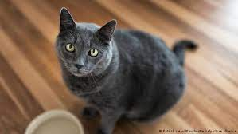
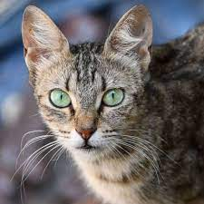
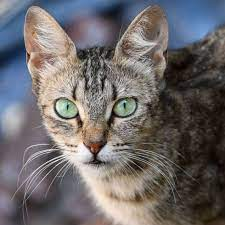
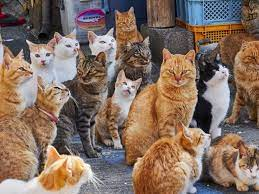
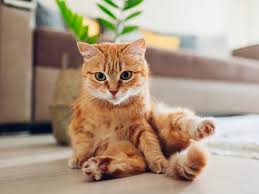
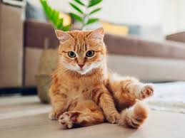

BIENESTAR ANIMAL
El bienestar animal no es solo la ausencia de enfermedad, sino el desarrollo de su máximo bienestar físico, mental y emocional
BIENESTAR ANIMAL EN PERROS
El bienestar animal es un concepto que tiene por objetivo cuidar la salud física y emocional de los animales. El concepto incluye tres elementos: el funcionamiento adecuado del organismo (que los animales estén sanos y bien alimentados), el estado emocional del animal (ausencia de emociones negativas tales como el dolor y el miedo crónico) y la posibilidad de expresar algunas conductas normales propias de la especie.
Cuando hablamos de bienestar animal en perros entonces, nos referiríamos a asegurarnos de que el animal se encuentre bien alimentado y recibida el cuidado veterinario correspondiendo, que no reciba castigos ni físicos ni emocionales y que pueda expresar conductas propias de la especie canina tales como: olfatear, morder, desgarrar, explorar. Los tres puntos descritos son igual de importantes para lograr el bienestar animal.
SALUD EN PERROS
Parte de nuestra responsabilidad como tutores caninos es asegurar una óptima salud en nuestros perros. Si bien parece obvio, en muchas ocasiones se subestima los cuidados veterinarios que un animal doméstico puede llegar a necesitar. Como cualquier otro ser vivo, los perros necesitan de chequeos médicos de forma regular, asistir a un establecimiento de salud siempre que se note una alteración clínica (vómitos, diarreas, alergias, dolores, etc.) y cumplir con ciertos protocolos de salud (vacunación y desparasitación).


De igual forma que ocurre con humanos, la medicina preventiva es la clave para garantizar una óptima salud para nuestros perros. Esto quiere decir, que no debemos asistir al veterinario solo cuando haya un problema de salud sino que debemos anticiparnos a ellos realizando controles de forma regular. Dependiendo de la edad y el estado de salud general de nuestro perro se recomienda realizar chequeos de rutina cada seis meses o un año. Estos chequeos deberían incluir análisis de sangre completos, análisis de orina, análisis de materia fecal y un electrocardiograma, entre otros. En ciertas razas de perros también puede ser recomendable realizar radiografías de columna y cadera.
COMPORTAMIENTO FELINO Y CONDUCTAS EN GATOS
El comportamiento felino comprende todas las conductas del hoy conocido gato doméstico, incluyendo el cómo se comportan dentro de casa, cómo interactúan con el entorno y cómo se comunican con nosotros y con terceros. La mayoría de los comportamientos comunes del gato doméstico incluyen técnicas de caza y reacciones a ciertos eventos como interacciones con humanos u otros animales y a estímulos del ambiente. La comunicación puede variar enormemente en dependencia al temperamento de cada gato. Sin embargo, hay pautas de conducta y comportamiento que son comunes a todos los miembros de la especie.
 

Los gatos utilizan el lenguaje corporal para comunicarse. Algunas de las conductas más frecuentes en el gato doméstico a la hora de comunicarse puede ser el frotarse contra un objeto, lamer y ronronear. El ronroneo por ejemplo, puede ser muestra de cualquier emoción extrema, como dolor.Otra vía de comunicación muy utilizada en gatos es el movimiento de la cola. Por lo general la suelen agitar suavemente cuando están relajados o la mueven abruptamente de lado a lado cuando están ansiosos.
Otra vía de comunicación que tienen los gatos son las feromonas. La liberación de feromonas se usa principalmente para marcar territorio. Cada gato libera una combinación de feromonas diferente desde las glándulas de sus mejillas, al lado de la boca, por lo que pueden marcar algo frotándolo con el morro.
También tienen este tipo de glándulas en la base de la cola, por lo que cuando un gato se frota contra tu pierna también intenta frotar el final de la espalda para reclamarte como parte de su territorio. Los gatos también pueden marcar con sus garras. Al arañar se vuelven a liberar rastros de feromonas que se transfieren al objeto que arañan. Al contrario que los gatos macho, las hembras y los machos emasculados no suelen marcar con orina. El único caso en el que las hembras marcan con orina es durante el celo, para que los machos las puedan encontrar.
Si bien los gatos en principio parecerían tener menos problemas de conducta que los perros, es posible que muestren algunos comportamientos problemáticos en casa. Algunos de ellos pueden ser: agresividad hacia otros gatos, agresividad hacia perros, agresividad hacia personas, miedo, destructividad dentro del hogar, hacer necesidades fuera de la caja de arena, y marcaje fuera de la caja de arena.
 

Los problemas de comportamiento en gatos no deben ser subestimados debido a que más allá de que puedan resultar molestos para sus tutores, muchos de ellos pueden afectar a su salud física y emocional. Si notamos que nuestro gato tiene problemas de comportamiento no debemos dudar en consultar con un profesional que nos ayuda con el tema.